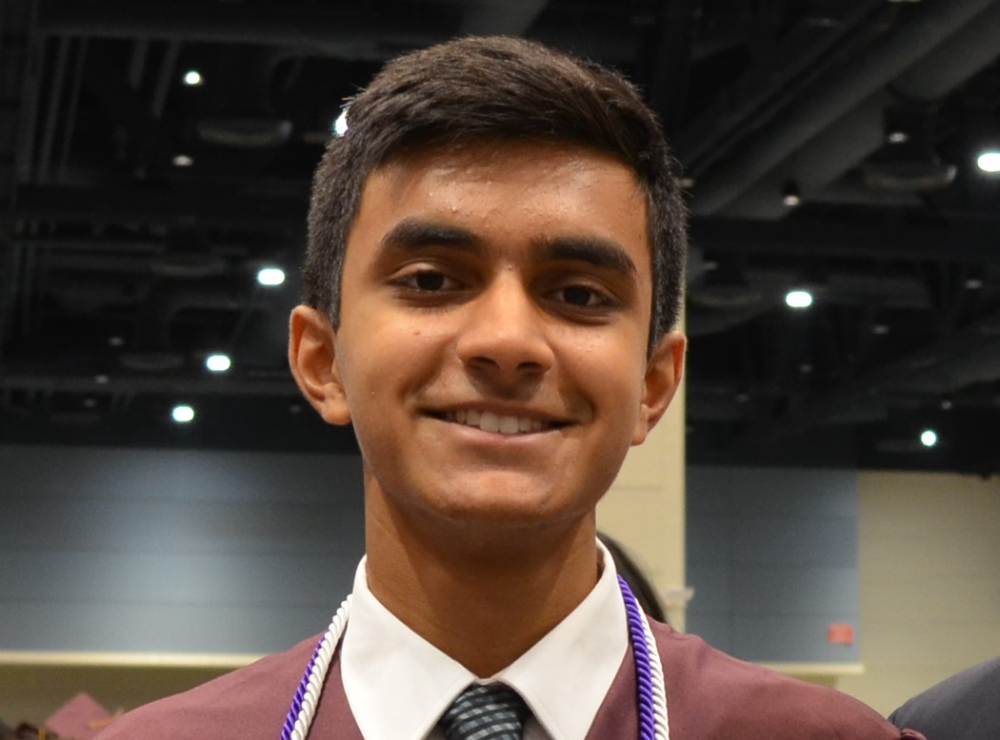

Student | Software Engineer
I am currently a student at Virginia Polytechnic and State University studying Computer Science in the College of Engineering. My expected graduation is May 2021. So far, I have taken courses such as Software Design, Data Structures, Algorithms, Computer Organization, Mobile Software Development (Android), Problem Solving, Discrete Mathematics, and Applied Combinatorics.
Ever since I was a kid, I have always liked solving problems. I was finally able to pursue this passion of mine when I started studying computer science at Virginia Tech. Through classes and projects, I learned essential skills such as teamwork, communication, time management, etc. I am also extremely excited to put these skills to use when I start my internship as a Software Engineer at Fannie Mae for the summer of 2020.
I am currently a student at Virginia Polytechnic and State University studying Computer Science in the College of Engineering. My expected graduation is May 2021. So far, I have taken courses such as Software Design, Data Structures, Algorithms, Computer Organization, Mobile Software Development (Android), Problem Solving, Discrete Mathematics, and Applied Combinatorics.
Ever since I was a kid, I have always liked solving problems. I was finally able to pursue this passion of mine when I started studying computer science at Virginia Tech. Through classes and projects, I learned essential skills such as teamwork, communication, time management, etc. I am also extremely excited to put these skills to use when I start my internship as a Software Engineer at Fannie Mae for the summer of 2020.
Source code for my projects (including the projects described above) is available at the following GitHub link
Github